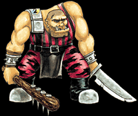

Imperial Forces |
Force Disposition Introduction |
Ork Forces |
|
- Captain Hobart-Gibbling, Pyran Dragoons

The high gravity steppe world of Krourk is home to an absolutely brutal race of Ogryns that have provided front line troops for the armies of the Armageddon Sector for centuries. Aside from these vicious warriors, the planet has little else to offer the Imperium and so the native Ogryns have been left to develop their own warlike society that many view as little better than that of the Orks currently assaulting Armageddon. In times of crisis, Imperial landing craft will descend upon Krourk and capture several tribes, taking the Ogryns to fight upon battlefields many light years away from their homes.
In combat, the Krourk Ogryn Auxilia are terrible to behold. Very few Imperial Guard officers will even try to teach them the relatively complex operation of a Ripper Gun. Instead, crude but deadly close combat weapons are hastily manufactured for newly raised regiments, thus allowing the Ogryns to perform in combat as they know best. Once in battle, the Krourk are almost completely uncontrollable and so they are used sparingly, with just one or two squads being assigned to any one action along existing Imperial Guard forces.
|
| ||||||||||||||||||||||||||||||||||||||||||||||||||
|
Only twice in the history of the Imperium's use of these Ogryns has the entire Auxilia been unleashed upon an enemy, with devastating consequences. Tales of the destruction of the Emcarta bases during the rebel uprisings reached worlds in neighbouring sectors, such was the brutality shown by the Krourk. Whilst few armies can withstand an assault of several thousand frenzied Ogryns, all heedless of their own lives, immense collateral damage is always caused after battle. These monsters are fully capable of destroying huge areas of civilised land in a very short space of time with their wanton lust for destruction and in great numbers, the Krourk Ogryns can easily rip apart armoured vehicles and topple small buildings. Many Imperial Guard officers consider the Auxilia to be a primitive form of doomsday weapon when used in this fashion and so it is rarely ordered as the Imperium is likely to suffer as much as its enemies. The main difficulty is always rounding them up after the battle has ceased, before the Ogryns turn their attentions away from a battered enemy and start concentrating on the surrounding area.
These incredibly violent abhumans have no training, no real equipment and no command structure, but they are reliable in that once they have been unleashed no force can stop them from tearing apart everything, living or otherwise, in the vicinity. The Auxilia are currently in a shuttle with only a skeleton crew, heading on a direct course for the Ork Airfields on the Netheria Peninsula. The resultant carnage should be complete: such a crack squad of utterly merciless brutes unleashed upon the comparatively weak defenses of the Ork Airfields should ensure that the waning strength of the Imperial Air Force once more blossoms into supremacy.
The use of Ogryns from the Krourk Auxilia is always heavily controlled, for they are a brutal race that can prove to be just as dangerous to their allies as to any enemy of the Imperium. They are sent to Imperial Guard regiments in single squads and between battles the Ogryns are often kept heavily sedated, which does little to improve their already volatile temperament when they are finally unleashed in combat.
In battle, the Krourk Ogryns become an almost unstoppable force. Whilst they have little patience or aptitude for the use of the relatively complex Ripper Gun, the damage they can cause with their own primitive close combat weapons is without measure. In numbers, a mob can tear apart lightly armoured vehicles and even bring down small buildings with little effort. Often the greatest problem in their use is rounding them all up after the battle has ended, before their delight in sheer violence causes serious collateral damage.
Imperial Guard Armies Only
0-1 Krourk Ogryns
Squad: The squad consists of between five to ten Krourk Ogryns. Weapons: Close combat weapon and Ogryn close combat weapon.
| |||||||||||||||||||||||||||||||||||||||||||||||||||